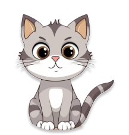

Quem somos
Este projeto foi idealizado a partir da crescente preocupação com a quantidade de gatos abandonados e sem um lar. O objetivo é criar uma plataforma onde administradores possam cadastrar gatos que precisam de um lar, permitindo que potenciais adotantes visualizem as informações dos animais e possam realizar a adoção de forma simples e eficiente. A plataforma visa contribuir para a redução do número de gatos abandonados, promovendo o encontro entre gatos necessitados de cuidados e pessoas dispostas a oferecer um novo lar e carinho.